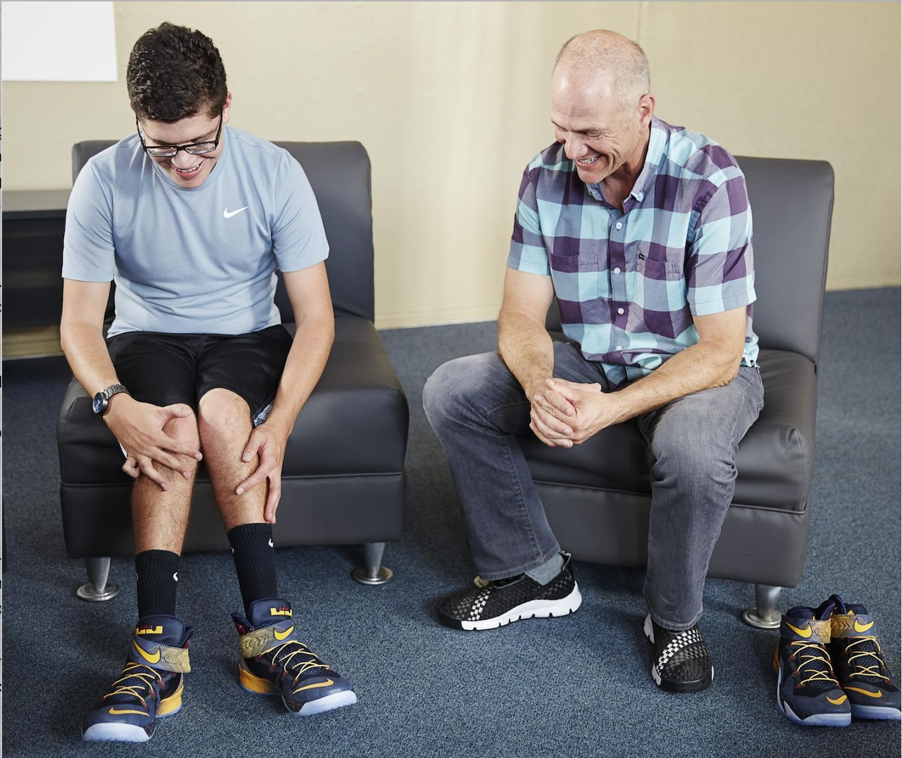
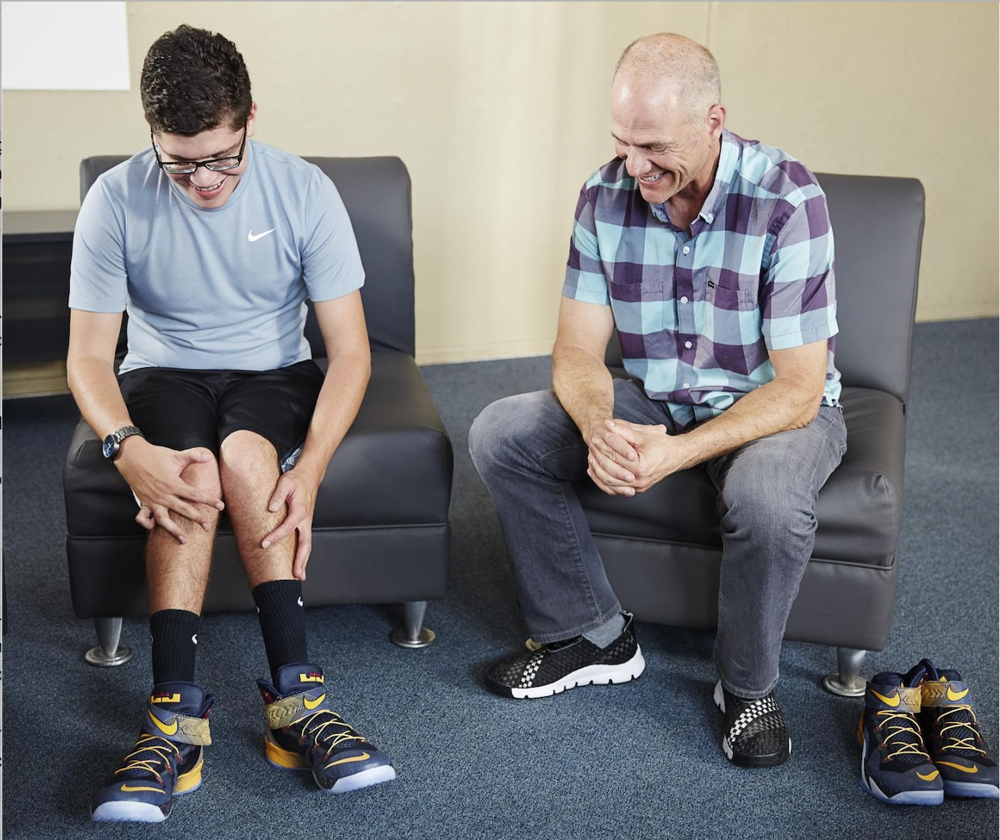

Accessible Designs
Below are several designs that embrace accessibility and inclusivity.
Nike FlyEase
 

Nike FlyEase lets you enjoy sport no matter your ability with technology developed from insights from the disability community.
Over the years, renowned Nike designer Tobie Hatfield has been involved in a number of projects that address these insights. One project that was on his radar for over three years was an entry-and-closure system for athletes who have trouble getting in and out of shoes, and securing them. While developing samples for a few of these individuals, Hatfield remained determined that the system be scalable for mass production. Enter inspiration Matthew Walzer.
Google Braille Keyboard
TalkBack braille keyboard is a new virtual braille keyboard integrated directly into Android. It’s a fast, convenient way to type on your phone without any additional hardware, whether you’re posting on social media, responding to a text, or writing a brief email. As part of our mission to make the world’s information universally accessible, we hope this keyboard can broadly expand braille literacy and exposure among blind and low vision people.
Xbox Adaptive Controller
Designed primarily to meet the needs of gamers with limited mobility, the Xbox Adaptive Controller is a unified hub for devices that helps make gaming more accessible.
The Adaptive Controller works with Xbox consoles and Windows PCs. Using just the Adaptive Controller without any external controls or switches, you’ll be quite restricted in the number and types of games you can play, as it's limited to a direction pad and A/B buttons. You won't find the joysticks, bumpers, or triggers that are standard on regular Xbox controllers. This is largely because the Adaptive Controller is designed to be used with accessories.
You can assign any of the Adaptive Controller’s buttons to act as a Shift on a keyboard, activating assignable alternate functions for the rest of the buttons. (For example, you could assign the B button as Shift.) When holding down Shift, your d-pad (up/down, left/right) can become the A, B, X, and Y buttons.
So, taking the Shift function into account, the Adaptive Controller by itself can replicate up to 11 button functions of a standard Xbox controller. That is something, but it isn’t enough to explore all the actions in a game like Madden. You’ll also be limited as to which buttons you can push at the same time.
Be My Eyes
Be My Eyes is a communication app where a person with blindness or low vision connects to people with sight, or industry representatives, through a video call.
The aim of the app is to provide immediate, easy-to-use support for people with blindness and low vision. For example, you point your smartphone camera at things and get help seeing what they are. The app rings, a droning ring, until both sides are connected. It is a free service and is currently available in 12 countries, including New Zealand.
The technology matches people based on language and time zone, so volunteers are only contacted during daytime hours. App users can also get technology support from the Microsoft Disability Answer Desk.
Google Live Transcribe
Live Transcribe is a smartphone application to get realtime captions developed by Google for the Android operating system. It's an app that makes everyday conversations and surrounding sounds more accessible among people who are deaf and hard of hearing, using just your Android phone.
After decades of creating innovative solutions to communicate, Dimitri Kanevsky, who lost his hearing at an early age, worked with his Google teammates to create Live Transcribe — a speech-to-text mobile app that helps him engage with spoken words and surrounding sounds in real time. Today, after years of testing and refinement in collaboration with the deaf and hard of hearing community, this technology enables millions of people to be a part of every conversation.
Live Transcribe launched in 2019, transcribing real-time speech in over 70 languages on Android and Chrome OS devices. A year later, the app was updated to also include notifications that alert users of critical sounds in one’s environment — a feature that helps not only people who are deaf or hard of hearing but also those who are unable to hear noises temporarily, such as when someone is wearing headphones.
The ideas don’t stop there: future enhancements include adding even more languages, increased transcription accuracy, and better experiences for those communicating across languages or in group settings. Downloaded over 100 million times as of 2021, Live Transcribe underscores the immense impact a single idea can have toward creating richer, more inclusive human connections.